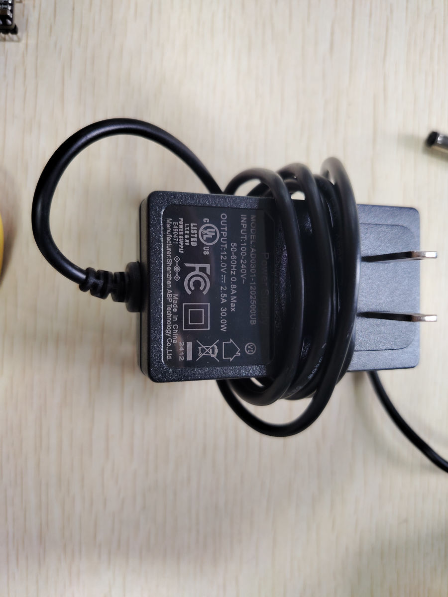
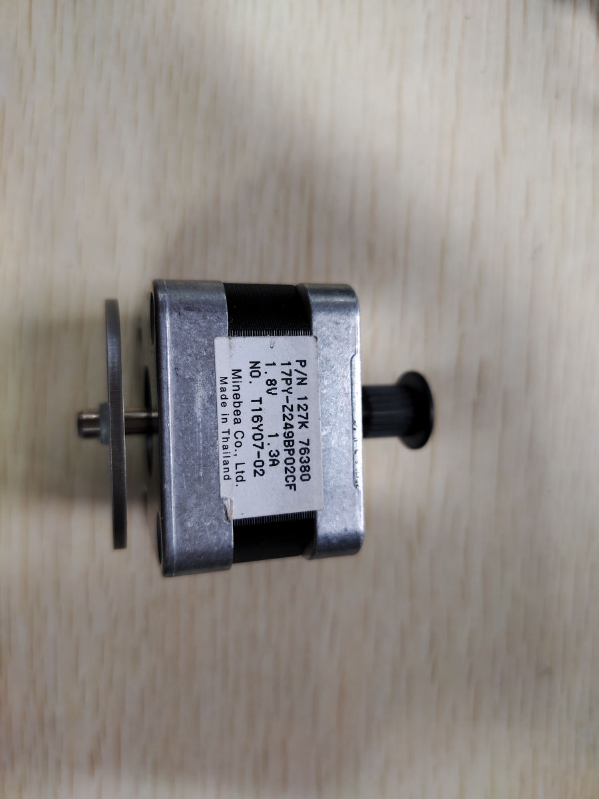
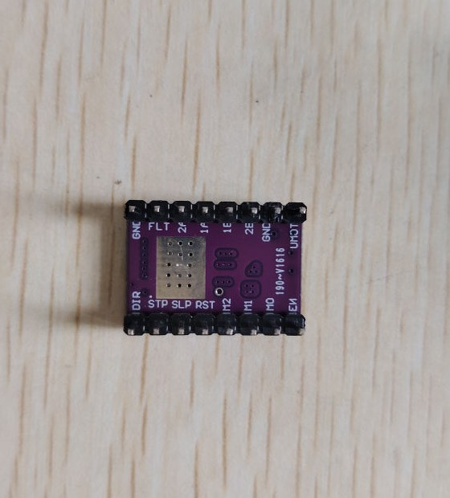
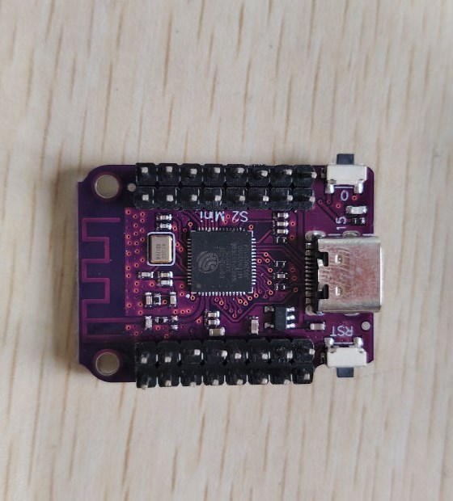
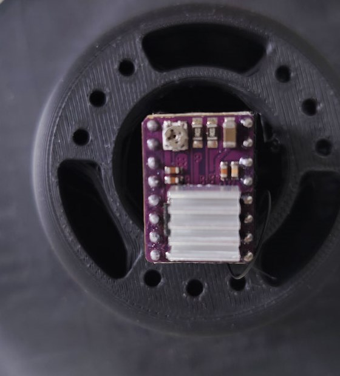
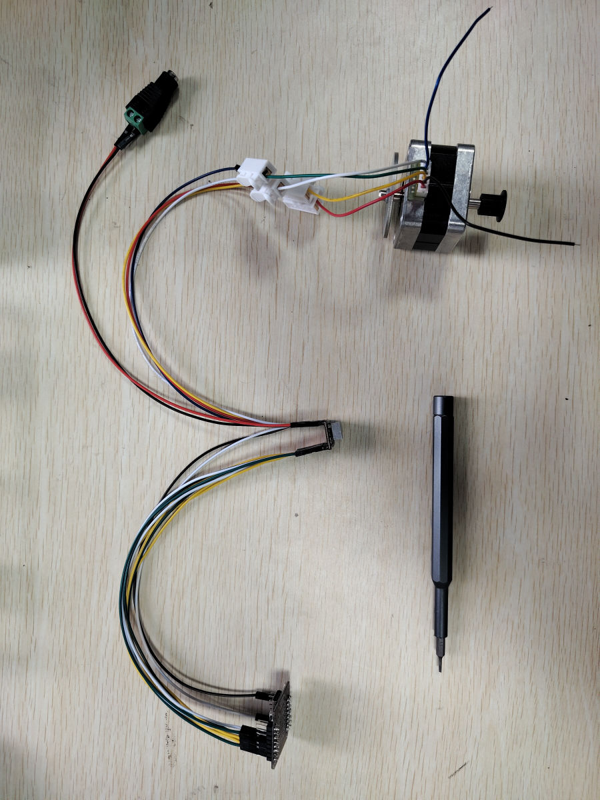

Make the motor turn
ESP32-S2 + DRV8825 stepper motor workshop. Today you will make a real stepper motor turn with a program you wrote yourself. 3D printers, CNC routers, label machines and camera sliders all run on the same core: a stepper motor, a driver, and a board that sends pulses. You are building their smallest working prototype today.
01Goals and schedule
This is not a demo. Everyone wires, measures voltage, sets current and flashes the board themselves, then makes the motor turn one revolution forward and one back.
By the end, you will be able to
- Identify what every part in the kit does and connect them correctly.
- Find the two coils of a stepper motor with a multimeter instead of guessing wire order.
- Understand and set the driver current limit (Vref), and know why you must not turn it blindly.
- Flash your first program and make the motor turn one revolution each way.
Hands-on build plus a troubleshooting challenge. Success means the motor turns both ways, the chip runs at a normal temperature, and the wiring survives a review.
90-minute schedule
| Time | Block | What you do |
|---|---|---|
| 10 min | Opening + safety | Listen, read section 02 |
| 15 min | Meet the parts + heatsink | Work through sections 03 and 05 |
| 20 min | Find coils + wire up | Sections 06 and 07, check every wire |
| 15 min | Power checks + current | Section 08, measure voltage, set Vref |
| 20 min | Flash the program | Section 09, make it turn |
| 10 min | Troubleshooting + wrap-up | Use section 11 |
02Safety first (read this)
This kit runs at 12V, a safe voltage that will not shock you. But the four rules below are like traffic rules: break them and you will not lose a component, you will lose your whole afternoon.
Motor wires, power wires, jumper wires — all the same. Voltage spikes from hot-plugging can destroy the driver chip in an instant. To touch a wire, unplug the 12V supply first.
VMOT to red (+), GND to black (−). Reverse it once and the module is gone. After wiring the supply, raise your hand for the host to check before powering up.
Screwdrivers, tweezers, clipped leads — anything that lands on the board is a short circuit. Put tools back outside the edge of the bench when you are done.
The driver gets warm in normal use. If it is too hot to hold, the current is set too high or cooling is inadequate. The internal thermal protection is already cycling the output off — let it cool, do not push through.
Everything here runs at 12V. Real industrial drives use 24V or higher and stricter rules, but “power off, then touch wires, then verify polarity” applies at every voltage.
03Materials and tools
This is everything that should be on your bench. Count it before the session and raise a hand if anything is missing.

| Item | Qty | Purpose | Watch out |
|---|---|---|---|
| 42 stepper motor | 1 | The actuator and the star of the day: 4 wires, 2 coils | It has a connector; do not pull on the wires |
| DRV8825 driver module | 1 | Turns weak logic signals into motor power; heatsink included | ESD sensitive — hold the edges, not the chip |
| Lolin S2 mini (ESP32-S2) | 1 | The brain that sends pulses | Follow the silkscreen for pin orientation |
| 12V switching supply | 1 | Power source for the motor | Check the output labels; do not reverse polarity |
| DC adapter (female) | 1 | Plugs into the supply and exposes red/black leads | Red = +12V, black = GND |
| 2-way splice connectors | 2 | Convert the DC adapter leads into jumper connections | Make sure they are fully seated before crimping |
| Jumper wires (M-M / M-F) | Several | All signal and power connections | Suggested colour code: red positive, black negative |
| Multimeter | 1 | Find coils, measure voltage, set current — the second star | Confirm the mode before measuring |
| Precision screwdriver | 1 | Adjust the Vref potentiometer and disassembly | Never lay the metal shaft on a powered board |
| Laptop + TypeC data cable | 1 | Write code, flash, read serial output | Must be a data cable, not charge-only |



One 100µF / 25V electrolytic capacitor per bench. The DRV8825 input uses a ceramic capacitor, and long power leads can produce spikes above 45V that destroy the chip. We skip it during the workshop; the host keeps it for the section 12 challenge. Until it is fitted, follow the rule: never unplug the power leads while the system is on.
04Meet the parts
4.1 The 42 stepper motor — precise “iron legs”
The 42 refers to a 42mm frame. This is not a free-spinning motor: it moves one step and stops. Each electrical pulse turns the shaft exactly 1.8°, so one revolution is exactly 200 steps. It has 4 wires, which are really two independent coils (group A and group B). The driver energises them in turn and the rotor steps around. Your first hands-on task is to find those two groups with a multimeter.


4.2 The DRV8825 module — translator and amplifier
ESP32 pins output only a few milliamps and cannot drive a motor directly. The DRV8825 does two jobs: it translates weak STEP/DIR signals into the timing that energises the two coils (this is called microstepping), and it amplifies current from the 12V supply to over 1A. It has 16 pins, but do not panic: we only use 12 of them.


Three things that confuse beginners, stated up front:
- There is no VDD pin. The module has an internal 3.3V regulator and powers its logic from the 12V rail, so it needs no second supply.
- The two GND pins are connected. Motor ground and logic ground are tied internally, so connecting either one to the ESP32 GND is enough for a common ground.
- RST and SLP must be pulled high. When either is low the chip resets, all outputs shut down, and no fault is reported. This is the most common reason a beginner has “perfect wiring but no movement”; section 08 checks it explicitly.
4.3 Lolin S2 mini (ESP32-S2) — the board in charge
It is a thumbnail-sized microcontroller board that programs over USB. Its only job is to send a train of pulses on STEP and a direction level on DIR, while the other six pins configure the driver. It connects to the laptop with a TypeC data cable.


4.4 The power trio — supply, DC adapter, splice connectors
The 12V supply is the power source and has a round DC output. The female DC adapter plugs in and exposes red (+12V) and black (GND) leads. Those are bare wires and cannot go straight onto header pins. That is what the two 2-way splice connectors are for: clamp a bare lead and a jumper together and the wire becomes a pluggable Dupont connection. The second connector is a spare.
4.5 Multimeter and precision screwdriver — the second star
The multimeter does three jobs today: resistance/continuity to find motor coils, DC voltage to confirm 12V and Vref, and acting as your eyes during troubleshooting. The precision screwdriver does one job: turning the tiny current potentiometer on the DRV8825. That one turn decides whether the motor runs smoothly and whether the chip overheats.
05Build 0: fit the heatsink
The DRV8825 chip produces significant heat and a bare board can only sustain about 1A per phase long-term. The included heatsink must go on before power-up. Fit it afterwards and the chip is already hot.

- Place the heatsink directly on the black chip, adhesive side down.
- Check that it touches no other component or pin. The aluminium heatsink is conductive — contact means a short circuit.
- Put the peeled backing film in the bin, not on the bench.
06Build 1: find the two coils
The 4 motor wires form two pairs: one for group A, one for group B. Never guess by colour — manufacturers use completely different colour maps. Measure it with a multimeter; it takes three minutes.

- Set the multimeter to resistance (Ω) or continuity. Touch the probes to any two motor wires and note the reading.
- Try other pairs until you find two conducting pairs: roughly 1Ω to a few tens of ohms (continuity beeps). A typical 42 motor reads about 1–10Ω.
- Pairs that read open (OL or a very high value) belong to different groups. Never connect them to the same output group.
- Label the two conducting pairs (A and B) and connect them to the DRV8825 A1/A2 and B1/B2 outputs.
Each pair conducts, and the two pairs do not conduct to each other. Do this and you have eliminated the biggest cause of “the motor buzzes but will not turn”.
07Build 2: complete the wiring
Look at the whole system first, then work through 7.1–7.5. Everything is unpowered — do not plug in the 12V supply yet.

7.1 Motor → module (4 wires)
Group A from section 06 goes to A1 and A2; group B goes to B1 and B2. Within a group, swapping A1/A2 only changes direction, not whether it turns.
The 42 motor's white connector matches female jumpers and plugs straight in; no splice connector needed.
7.2 Power → module (2 wires)
- Plug the DC adapter into the 12V supply output (align the key and push fully in).
- Clamp the adapter's red and black leads to two jumpers in the splice connectors: red to red, black to black.
- Plug the red jumper (male end) into VMOT and the black jumper into the GND next to it (the power-side ground).

It absorbs voltage spikes on the supply lead and protects the chip (long leg positive to VMOT, short leg to GND; reverse polarity makes it bulge and burst). To keep wiring simple for beginners we skip it and leave it for the section 12 challenge. Until it is fitted, follow one rule: never unplug the VMOT power lead while powered.
7.3 ESP32 → module (8 control wires + common ground)
Wire each connection using the pin table in section 13: GPIO2→DIR, GPIO3→STEP, GPIO4→SLP, GPIO5→RST, GPIO6→M2, GPIO7→M1, GPIO8→M0, GPIO9→EN. Then run one black jumper from ESP32 GND to the GND on the right side of the module. This is the common ground; without it nothing works, because voltage is relative and both boards need the same reference.
7.4 Special attention: SLP and RST
The DRV8825 SLP (sleep) and RST (reset) pins are both active low. If either is pulled low or left floating, the chip shuts down completely: no motion, no torque, and no fault. FLT stays high and a multimeter shows nothing wrong. This is the number one reason for “wiring is perfect but the motor will not move”. Our program pulls both high at startup, but the physical connection must be solid.
7.5 Unpowered self-check
All checked → raise your hand for the host to review → only then go to section 08.
08Power-up: three checks and current setting
8.1 Three checks before power
- Check the supply: plug the 12V supply into mains, but do not touch any jumper yet. Set the multimeter to DC volts (20V range) and measure the DC adapter leads; expect about 12V.
- Check common ground: continuity mode, one probe on ESP32 GND and one on module GND; it should beep.
- Check the coils: confirm the group labels from section 06.
After all three pass, connect 12V to VMOT/GND. Do not connect the ESP32 TypeC yet. This is the “safe first power-up”: only the driver and supply are live, the smallest possible scope.
8.2 First power-up checks
- DC 20V range: red probe on VMOT, black on GND; expect about 12V.
- Move the red probe to FLT on the right side of the module, black stays: expect close to 3.3V (high = no fault, normal).
- Touch the heatsink with the back of your hand: slightly warm is normal (the chip draws current even when idle). If it is hot, cut power and raise a hand.

8.3 Set the current: adjust Vref (the most important step)
The DRV8825 is a constant-current driver: it ignores supply voltage and holds coil current at the set value. That value comes from the small potentiometer, and the factory position is completely random. Some boards ship at 0V (motor does nothing), some near full scale (chip runs hot). Every new board must be calibrated.
Work in pairs for this step:
- Measurer: clip the black probe to any GND — module GND, ESP32 GND, even the black (−) lead from the DC adapter; they are all the same node. Clip it and do not touch it again. Then hold the red probe firmly on the edge of the metal potentiometer cap (leave the centre slot for the screwdriver) and read the meter aloud.
- Operator: hold the precision screwdriver in both hands, engage the centre slot, and turn about 1/16 of a turn at a time. Stop the moment the measurer says stop, wait for a stable reading, then move again.
- Discipline: a probe slipping onto a nearby pin can short the board. Slow is fine, rushing is not.
- Set the multimeter to DC volts (2V or 20V manual range). Clip the black probe to any GND and leave it for the whole calibration.
- Touch the red probe to the metal cap of the potentiometer. It is connected to the wiper and is the Vref test point.
- With power on, the operator turns a tiny amount at a time while the measurer waits for a stable reading. Aim for the target (start at 0.5V for teaching; for a 1.5A motor, 0.75V for real use).
- Write the final reading on a label and stick it to the board. That is the board's ID; recalibrate whenever you change motor or board.
The potentiometer has a very short travel, so a tiny movement makes the reading jump. Keep the black probe clipped, touch only the cap edge with the red probe, use a manual range, and wait a second or two after each nudge. Do not chase the third decimal — you cannot feel the difference between 0.5V and 0.55V.
The motor can stay disconnected (safer), but the module must have 12V on VMOT — its internal regulator and reference are powered from it. With power off you will always read 0.
Reference values: 0.5V ≈ 1.0A for teaching; a common 42 motor is about 0.6V ≈ 1.2A; a 1.5A motor is rated at 0.75V. Always start at 70% of the rated current and confirm by running for 10 seconds and checking temperature.
09Flash the first program
9.1 Connect the ESP32
Connect the Lolin S2 mini to the laptop with the TypeC data cable. A new serial device should appear (COMx on Windows). If nothing happens, you probably have a charge-only cable or a missing serial driver — ask the host.
9.2 Prepare Arduino IDE
- Download and install Arduino IDE 2 from arduino.cc.
-
File → Preferences → “Additional boards manager URLs”:
https://espressif.github.io/arduino-esp32/package_esp32_index.json -
Tools → Board → Boards Manager, search
esp32, install esp32 by Espressif Systems (several hundred MB; let the bar finish). - Tools → Board → esp32 → LOLIN S2 mini; Tools → Port → the new COM port.
9.3 First program: one turn forward, one turn back
Create a new sketch, replace the whole file with the code below, and
save it in a brand-new folder (for example
MyFirstStepper). Arduino merges .ino files in a same-named folder,
so a fresh folder per exercise is a good habit.
/* First stepper program: full step, one turn forward, one back
Core idea: every rising edge on STEP moves the motor one step.
Wiring: DIR=2 STEP=3 SLP=4 RST=5 M2=6 M1=7 M0=8 EN=9 */
#define DIR_PIN 2 // Direction: high = CW, low = CCW
#define STEP_PIN 3 // Step: one rising edge = one step; pulse rate sets speed
#define SLEEP_PIN 4 // Sleep: must be high; low = outputs off (and no fault!)
#define RESET_PIN 5 // Reset: must be high; low = outputs off (and no fault!)
#define M2_PIN 6 // Microstep select: all low = full step (200 steps/rev),
#define M1_PIN 7 // the high/low combination sets the microstep ratio,
#define M0_PIN 8 // used by the smoother version in 9.4
#define EN_PIN 9 // Enable: low = outputs on, high = outputs off (no holding torque)
const int stepsPerRevolution = 200; // Full step: 200 steps per revolution (1.8° × 200 = 360°)
void setup() {
Serial.begin(115200); // Open serial so progress is visible in the monitor
// All 8 pins as outputs
pinMode(STEP_PIN, OUTPUT);
pinMode(DIR_PIN, OUTPUT);
pinMode(SLEEP_PIN, OUTPUT);
pinMode(RESET_PIN, OUTPUT);
pinMode(M2_PIN, OUTPUT);
pinMode(M1_PIN, OUTPUT);
pinMode(M0_PIN, OUTPUT);
pinMode(EN_PIN, OUTPUT);
// Turn on the driver's three switches: get these wrong and the motor sits still with no error
digitalWrite(SLEEP_PIN, HIGH); // SLP low = sleep, outputs off
digitalWrite(RESET_PIN, HIGH); // RST low = reset, outputs off
digitalWrite(EN_PIN, LOW); // EN low = outputs enabled
// M0/M1/M2 all low = full-step mode (200 steps per revolution)
digitalWrite(M0_PIN, LOW);
digitalWrite(M1_PIN, LOW);
digitalWrite(M2_PIN, LOW);
digitalWrite(STEP_PIN, LOW); // Keep STEP low to start
}
void loop() {
digitalWrite(DIR_PIN, HIGH); // 1. Direction = clockwise
Serial.println("Spin CW...");
// 2. Send 200 pulses = 200 steps = exactly one revolution
for (int i = 0; i < stepsPerRevolution; i++) {
digitalWrite(STEP_PIN, HIGH); // Rising edge: the rotor takes a step
delayMicroseconds(2000); // Hold for 2ms (too short and the driver may miss it)
digitalWrite(STEP_PIN, LOW); // Pull low, ready for the next pulse
delayMicroseconds(2000); // Another 2ms: 4ms per step total
}
delay(1000); // 3. Pause 1s (outputs still on: holding torque)
digitalWrite(DIR_PIN, LOW); // Change direction = counter-clockwise, one more turn
Serial.println("Spin CCW...");
for (int i = 0; i < stepsPerRevolution; i++) {
digitalWrite(STEP_PIN, HIGH);
delayMicroseconds(2000);
digitalWrite(STEP_PIN, LOW);
delayMicroseconds(2000);
}
delay(1000);
}1. One pulse = one step: the rotor moves on the LOW-to-HIGH edge of STEP. 2. DIR sets direction: high = CW, low = CCW, changed only when reversing. 3. SLP / RST / EN are switches: SLP and RST must be high (low = sleep/reset, outputs off with no error), EN must be low to enable outputs. M0/M1/M2 select microstepping; all low = full step.
Speed is set by delayMicroseconds(2000): one pulse period is
2000 + 2000 = 4000µs, so 200 steps × 4ms ≈ 0.8s per revolution (about 75 rpm).
Lower the number to go faster, but too fast and the motor cannot keep up and
“loses steps”, which looks like vibration.
- Click the → Upload button at the top left. The first compile is slow.
- If you get “port not found” or upload fails: hold the BOOT button, click upload, and release once progress starts.
- After upload, open the Serial Monitor (magnifier icon), set 115200, and press the board's RST button to restart the program.
This program is deliberately simple so you can see the essence of “pulse → step”, but it has an obvious side effect: it is noisy and shaky. In full-step mode every step is a sharp mechanical kick, and 75 rpm strings those kicks into an audible rattle that can even excite resonance. It is not a wiring error. The next version fixes it.
9.4 Try the “smooth” version
The improved program combines three changes, with no wiring changes at all:
- Higher microstepping: pull M2 high for 1/16 step, turning 200 steps per revolution into 3200. One big kick becomes 16 small ones and the rattle turns into a faint hiss. The resulting ~47 rpm also avoids the 10–20 rpm mid-band resonance.
- Ramps: accelerate over 200 steps and decelerate over 200 steps, removing the jolt at start and reversal.
- Idle current cut: raise EN while paused to turn outputs off, resting both motor and chip (cost: no holding torque while paused).
Create a new sketch folder (for example MySmoothStepper) and
replace the whole file with this code:
/* Improved version: smooth stepping — high microstep + ramps + idle current cut
Wiring is identical to the first program. Not one wire changes!
Three changes:
1. M2 = HIGH: 1/16 microstep, 200 steps per revolution becomes 3200
2. 200-step acceleration and deceleration ramps
3. Raise EN while paused to turn outputs off, resting motor and chip */
// ---------- Pin definitions (identical to the first program) ----------
#define DIR_PIN 2 // Direction
#define STEP_PIN 3 // Step: one rising edge = one step
#define SLEEP_PIN 4 // Sleep, must be high
#define RESET_PIN 5 // Reset, must be high
#define M2_PIN 6 //
#define M1_PIN 7 // Microstep select: M2=1, M1=0, M0=0 → 1/16
#define M0_PIN 8 //
#define EN_PIN 9 // Enable: low = outputs on, high = outputs off
// ---------- Motion parameters (change these three lines to tune speed / smoothness) ----------
#define STEPS_PER_REV 3200 // Steps per revolution: 1/16 = 200 × 16. Change this with microstepping!
#define HALF_US_MIN 200 // Half-period at full speed (µs): 200+200 = 400µs/step ≈ 47rpm, avoids resonance
#define RAMP_STEPS 200 // Steps spent accelerating and decelerating
// Emit one STEP pulse: us is the high time and the low time
void stepPulse(int us) {
digitalWrite(STEP_PIN, HIGH); // Rising edge = one step
delayMicroseconds(us);
digitalWrite(STEP_PIN, LOW); // Pull low, ready for the next pulse
delayMicroseconds(us);
}
// Move n steps, cw sets direction (true = clockwise), with built-in ramps
void moveSteps(int n, bool cw) {
digitalWrite(DIR_PIN, cw ? HIGH : LOW); // Set direction first
delayMicroseconds(20); // Wait 20µs for the direction signal to settle
for (int i = 0; i < n; i++) {
int us = HALF_US_MIN; // Middle section: full speed
int edge = min(i, n - 1 - i); // Distance to start or end, whichever is closer
if (edge < RAMP_STEPS) { // Inside a ramp: scale the speed
int startUs = HALF_US_MIN * 4; // Ramp starts 4× slower than full speed
us = startUs - (long)(startUs - HALF_US_MIN) * edge / RAMP_STEPS;
}
stepPulse(us);
}
}
void setup() {
Serial.begin(115200);
delay(300);
// All 8 pins as outputs (same as the first program)
pinMode(STEP_PIN, OUTPUT);
pinMode(DIR_PIN, OUTPUT);
pinMode(SLEEP_PIN, OUTPUT);
pinMode(RESET_PIN, OUTPUT);
pinMode(M2_PIN, OUTPUT);
pinMode(M1_PIN, OUTPUT);
pinMode(M0_PIN, OUTPUT);
pinMode(EN_PIN, OUTPUT);
digitalWrite(STEP_PIN, LOW);
digitalWrite(SLEEP_PIN, HIGH); // Wake the driver
digitalWrite(RESET_PIN, HIGH); // Release reset
digitalWrite(EN_PIN, LOW); // Enable outputs
digitalWrite(M2_PIN, HIGH); // * The only setup difference from the first program:
digitalWrite(M1_PIN, LOW); // M2=1, M1=0, M0=0 → 1/16 microstep
digitalWrite(M0_PIN, LOW);
}
// Rest while paused: the chip stops chopping and heating, but the motor loses holding torque
void idle(unsigned long ms) {
digitalWrite(EN_PIN, HIGH); // Outputs off, coils unpowered
delay(ms);
digitalWrite(EN_PIN, LOW); // Outputs back on
delay(5); // Wait 5ms for current to rebuild
}
void loop() {
Serial.println("CW");
moveSteps(STEPS_PER_REV, true); // One clockwise turn (3200 steps, with ramps)
idle(800); // Pause 0.8s (outputs off)
Serial.println("CCW");
moveSteps(STEPS_PER_REV, false); // One counter-clockwise turn
idle(800);
}Upload, open the serial monitor at 115200, and compare by ear:
- Listen at the reversal: the first program jolts; what does this one do?
- After one minute, feel the heatsink. How does it compare with the first program after the same time?
- Think: why is the speed not 16× faster when steps go from 200 to 3200?
Because real speed comes from the pulse interval (HALF_US_MIN):
200 + 200 = 400µs per step, so 3200 steps take about 1.3s per revolution
(about 47 rpm). If you change microstepping but forget to multiply the step
count by 16, 200 pulses only move 1/16 of a turn and it looks like “it stopped
working again” — the classic microstepping trap.
10Expected behaviour and checkpoints
- The motor turns steadily forward for about 0.8s (one revolution), pauses 1s, then reverses; repeat.
- A regular “tak-tak” step sound is normal in full-step mode, not a fault.
- After trying 9.4: the sound becomes a faint continuous hiss and the start/reversal jolts disappear. That difference is microstepping plus ramps.
- The serial monitor repeats
Spin CW... / Spin CCW.... - Pinching the shaft gently feels a clear “locked” force (holding torque), which disappears when power is removed.
- After two minutes the heatsink is only warm and you can keep your hand on it.
All of the above? You have built a complete motion control system on your own.
Two effects worth remembering
Why is the chip warm even when idle? The DRV8825 is a constant-current driver. To hold the rotor it keeps energising the coils and chopping at high frequency, so heat depends mostly on the current setting, not on whether the motor is turning.
Why does the shaft feel notchy when turned by hand? With power off it is cogging torque (permanent magnets attracted to stator teeth); with power on it is holding torque. Both are inherent, not faults.
11Troubleshooting
If the motor will not turn, work down the table. The first two rows cover 80% of beginner failures.
| Symptom | Most likely cause | What to do |
|---|---|---|
| Nothing at all, no sound, no torque | SLP/RST pulled low; EN not low; no VMOT; Vref at 0 | Measure GPIO4/5/9: expect 3.3/3.3/0V; measure VMOT: 12V; measure Vref |
| FLT is high but the motor does not move | RST = 0 (reset disables all outputs but is not a fault, so FLT stays high) | Measure RST to GND: is it 3.3V? Check whether GPIO5 is plugged into the wrong pin |
| Buzzing and shaking but not turning | Coils mixed across phases; or Vref too low for enough torque | Regroup per section 06; raise Vref a little |
| Turns a little then stops, intermittent, chip hot | Vref too high causing thermal shutdown; no heatsink; missing 100µF; supply sagging under load | Lower Vref; confirm heatsink; add capacitor; measure VMOT while running and check it stays above 10V |
| It turns but feels slightly rough | 1/2-step feel with no acceleration; cogging is inherent | Switch to 1/16 (M2=1, steps 3200) and add ramps; the rest is physical limit |
| Potentiometer reading jumps with the slightest touch | Single-turn pot with short travel; the target is a small part of the range | Clip the probe, use a manual range, nudge in tiny amounts |
| Upload fails / port not found | ESP32 core not installed; charge-only cable; port busy | Install driver and core; swap cable; hold BOOT while uploading |
| Changed the code but nothing changed | An old sketch buffer in Arduino IDE overwrote the new file | Close the old sketch, reopen the new folder; one folder per exercise |
| Different behaviour after changing motors | Motors have different rated currents, so Vref must be recalibrated; very low-resistance motors do not suit the DRV8825 | Recalculate Vref from the new label; measure coil resistance first; for 1–3Ω high-current motors use a TB6600-class driver |
12Stretch challenges
After the basic build, try these in order. Each one produces a difference you can feel or hear.
-
Finer · 1/32 microstep: on the 9.4 smooth version, also pull M0
high (M2=1, M1=0, M0=1 = 1/32) and change
STEPS_PER_REVto 6400. Does it get smoother still? If you forget the step count, 3200 pulses only move half a turn and it looks slower. - Protect · add the 100µF capacitor: with power off, fit the long leg (positive) to VMOT and the short leg to the adjacent GND, as close to the module as possible. Rerun the program to confirm normal operation, then research why long supply leads create spikes above 45V (keywords: parasitic inductance, LC spike).
-
Tune · change ramp parameters: on the smooth version, change
RAMP_STEPSfrom 200 to 20, then 400. How does the start feel? ChangeHALF_US_MINfrom 200 to 100 (about 94 rpm) and back. Which is smoother? Remember: revolution time ≈ steps × pulse interval × 2. -
Cool · idle current cut: change
800insideidle()to3000, run for a while and compare chip temperature. What is the cost? (No holding torque while paused; the shaft can be turned by hand.) - Engineering · use AccelStepper: use its setMaxSpeed / setAcceleration to make an S-curve and feel what a motion-planning library does for you.
- Perspective · look at industrial drives: production lines use integrated industrial drives such as Leadshine DM series or Moons units (32-bit DSP plus discrete power devices; current and microstepping set by DIP switches or software, with no fiddly Vref pot), with multi-axis sync over EtherCAT. The chopper current control, microstepping and STEP/DIR ideas you learned here all apply.
13Appendix
13.1 Pin map (stick it on your kit box)
| DRV8825 pin | To ESP32 | Function | Notes |
|---|---|---|---|
| DIR | GPIO2 | Direction | High/low = the two directions |
| STEP | GPIO3 | Step pulse | One step per rising edge |
| SLP | GPIO4 | Sleep control | Must be high; low = all outputs off |
| RST | GPIO5 | Reset control | Must be high; low = all outputs off, no fault |
| M2 / M1 / M0 | GPIO6 / 7 / 8 | Microstep select | All low = full step; M2 high = 1/16 |
| EN | GPIO9 | Output enable | Low = running; high = outputs off, no holding torque |
| VMOT / GND | 12V supply ± | Power input | Add a local 100µF capacitor in the advanced stage |
| GND (the other one) | ESP32 GND | Common ground | Without it, no signal means anything |
| A1/A2, B1/B2 | Motor coils | Coil outputs | Swappable within a group (direction only) |
| FLT | Not connected | Fault indicator | High = OK; low = overcurrent / overtemp / undervoltage |
13.2 Vref quick reference
Standard DRV8825 modules: current limit = Vref × 2.
| Vref | Current limit | Suitable motor |
|---|---|---|
| 0.4 V | 0.8 A | Small frame / low-current motors |
| 0.5 V | 1.0 A | Teaching starting value |
| 0.6 V | 1.2 A | Common 42 motors (about 80%) |
| 0.75 V | 1.5 A | Full rating for a 1.5A motor |
A bare DRV8825 sustains about 1A per phase long-term; with a heatsink, about 1.5A. The 2.5A rating is a peak under ideal cooling.
13.3 Glossary
- Full step / microstep: splitting one 1.8° step into 2–32 parts. Finer means smoother and quieter, but the pulse count for a given speed multiplies.
- Holding torque: the maximum external force the motor resists when energised; the most important stepper rating.
- Cogging torque: the notchy feel when turning an unpowered shaft, caused by magnets and stator teeth. Inherent, and cannot be removed by the driver.
- Chopper current control: the driver switches at high frequency to hold coil current at the set value regardless of supply voltage — which is how 12V can drive a coil rated at only a few volts.
- TSD / UVLO / OCP: thermal shutdown (~165°C) / undervoltage lockout (VMOT below ~8.2V) / overcurrent protection. All disable the output; only UVLO and OCP pull FLT low.
- Common ground: two boards must share one ground reference before any high/low level means anything.
14Host notes
Before the session
Common on-site incidents
- Burning smell / bulging capacitor: cut power immediately. Usually reversed supply polarity or a reversed 100µF; inspect, then replace module and capacitor.
- Violent shaking and buzzing: 90% coils mixed across phases, 10% Vref too high. Regroup first, then adjust current.
- Chip too hot to touch: power down and cool, set Vref below 0.4V and retest; confirm the heatsink. If it still overheats at low Vref, replace the board.
- Whole group cannot find the port: classroom network prevented the ESP32 core install; use the offline package.
- One board “will not move no matter what”: measure RST for 3.3V — row two of the troubleshooting table; historically the highest hit rate.
Source document:
gitee.com/zaoyige/tryesp32 · DRV8825 workshop ↗
Reference: lastminuteengineers.com, “Interface DRV8825 Stepper Motor Driver with Arduino”; TI DRV8825 datasheet.